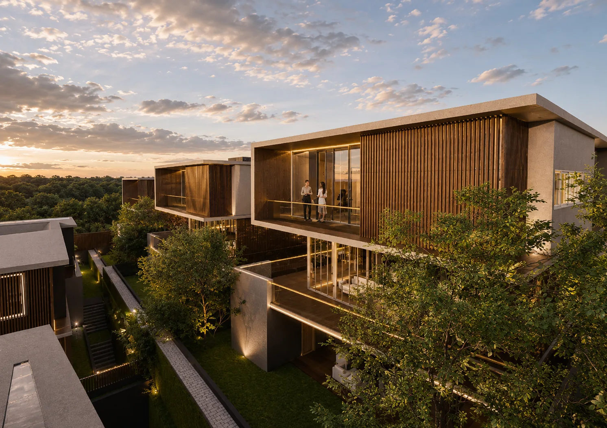
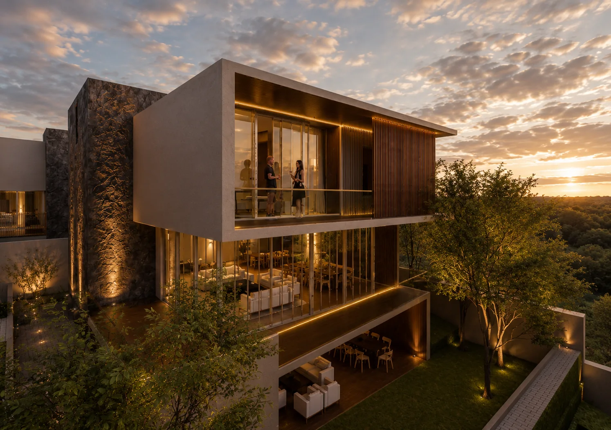

PROPUESTA ARQUITECTÓNICA
Casas A / B / C
Áreas sociales generosas y un jardín privado integrado a la propuesta.
Jardín proyectado: 71.70 m²Sala / comedor: 63 m²
BELLAS LUCES · SANTA CATARINA PINULA
Una propuesta residencial de arquitectura contemporánea, espacios bien pensados y una nueva perspectiva de hogar en Bellas Luces.
UN LUGAR PARA IMAGINAR TU FUTURO
Bellas Luces es una propuesta de desarrollo residencial que combina volúmenes contemporáneos, luz natural y conexiones con el entorno.
Su presentación arquitectónica contempla distintas configuraciones de vivienda, con áreas sociales, espacios familiares y soluciones exteriores que varían según cada modelo.


Diseñado para una nueva manera de vivirUNA VISIÓN ARQUITECTÓNICA
EXPLORA LAS PROPUESTAS
Explora las agrupaciones arquitectónicas presentes en la primera fase del concepto. Cada propuesta tiene su propia distribución y relación con los espacios exteriores.
PROPUESTA ARQUITECTÓNICA
Áreas sociales generosas y un jardín privado integrado a la propuesta.
PROPUESTA ARQUITECTÓNICA
Un diseño que destaca la integración de áreas interiores con jardín y pérgola.
PROPUESTA ARQUITECTÓNICA
Una propuesta de espacios sociales conectados con pérgola y garaje en nivel inferior.
PROPUESTA ARQUITECTÓNICA
Diseño con área social, pérgola y opciones de espacios exteriores según plano.
Las áreas citadas corresponden a componentes específicos de los planos conceptuales; no representan el metraje total de la vivienda. Distribuciones e imágenes sujetas a revisión y confirmación.
IMAGINA CADA DETALLE
Imágenes de la presentación de diseño conceptual. Son ilustrativas y pueden variar respecto a una construcción definitiva.

EL PROYECTO EN TUS MANOS
Explora la presentación arquitectónica original con el plano general, distribuciones por nivel, elevaciones y renders de las residencias.
Material conceptual atribuido a S.oN Arquitectura en la presentación original.
CONECTADO CON TU PRÓXIMO HOGAR
El proyecto se ubica en el sector Bellas Luces, Santa Catarina Pinula, Guatemala, después de El Pueblito.
La referencia del mapa corresponde al sector Bellas Luces; la ubicación exacta del desarrollo y las indicaciones de visita deben confirmarse con el equipo comercial.
RESOLVEMOS TUS DUDAS
La información disponible procede de la propuesta arquitectónica. Para condiciones comerciales, nuestro equipo podrá orientarte una vez confirmadas.
Hablar con un asesorEn el sector Bellas Luces de Santa Catarina Pinula, Guatemala, después de El Pueblito. La referencia de acceso se incluye en el mapa.
El concepto presenta viviendas identificadas como A, B, C, D, E, F y G, organizadas en cuatro grupos de distribución arquitectónica.
Sí. Puedes explorar una selección de planos en esta página y descargar sin costo la presentación arquitectónica completa de 35 páginas.
La presentación proporcionada es de diseño conceptual y no establece precios, fechas de entrega ni inventario disponible. Solicita información para recibir una actualización comercial cuando esté confirmada.
COMIENZA TU PRÓXIMO CAPÍTULO
Cuéntanos un poco de ti y del modelo que más te interesa. Un asesor podrá utilizar esta información para orientarte sobre los siguientes pasos.